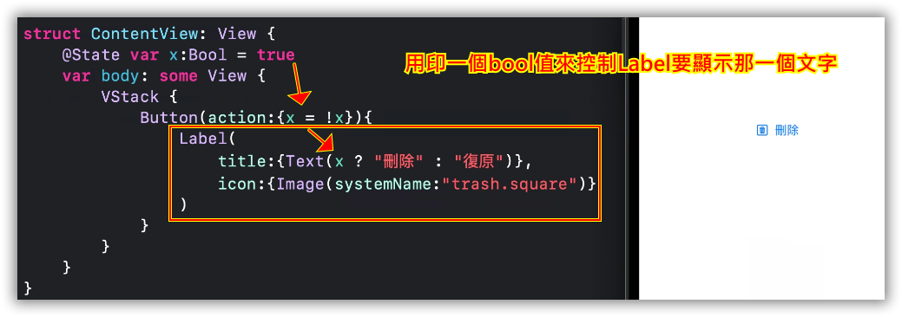

1. Image的使用
如何建立一個資材檔，讓專案整齊
如何建立一組多解析度的圖片
國外有個名為 MakeAppicon 的線上產生器，只要將圖片上傳，即可為你自動產生 iOS 和 Android 適用的圖示，包括各種能用在 iPhone、iPad 的應用程式、Spotlight 搜尋和設定畫面的大小，也包括可用於 Android 平台不同大小的圖示
1 點選choose file，選擇你要製作的圖片檔案，
2 輸入app名稱
3 選擇APP的屬性
4 選擇關鍵字
5 填寫email
6 下載之後，去收email即可取出，打開ios資料夾，裡面即包含所以需要的ICON
APP的icon如何設定
在Assets.xcassets中或者image.xcassets中有一個appicon裡面就是放APP的ICON，當安裝好會顯示在手機頁面上的圖示。一一放入相對應的圖示。
2. Button《image》
image("影像名稱") 預設是原圖大小
讓image可以調整大小，resizable，預設是fill、不保持長寬比變形，充滿frame(frame預設是整個螢幕)
讓image可以調整大小，預設是變形充滿螢幕(包括安全區域)

設定IMAGE的FRAME改變大小
保持比例 FIT: 比例不變， aspectRatio
圖片剪裁clipShape
調整透明度-opacity
重疊圖片-overlay
3. ICON《SF Symbols》
ICON：安裝SF Symbols
從iOS13開始，APPLE導入「SF Symbols」的大量系統圖片供開發者在任何APP中使用，請在MAC上安裝下面的APP
Download SF Symbols 3.2使用方式

4. Label《文字+ICON》
Label = ICON+Text
5. Button《Label》
button = action + Label （本來是刪除 按了變成復原）

button = action + Label （按了 刪除 ←→ 復原 ）
6. Button-buttonStyle-動畫

7. 習題
請按照下圖指示，製作一個login畫面